Hobbies
Calligraphy & Hand Lettering
I’m a huge fan of words of affirmation and giving tokens of gratitude, so I love calligraphy and hand lettering for giving me an excuse to make cards and gifts for the wonderful people in my life.
Here are some of my favorite creations.
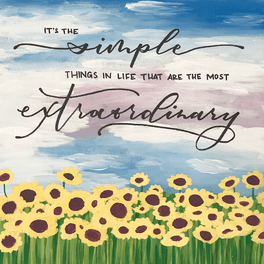
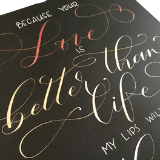
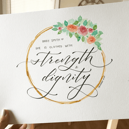
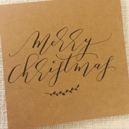
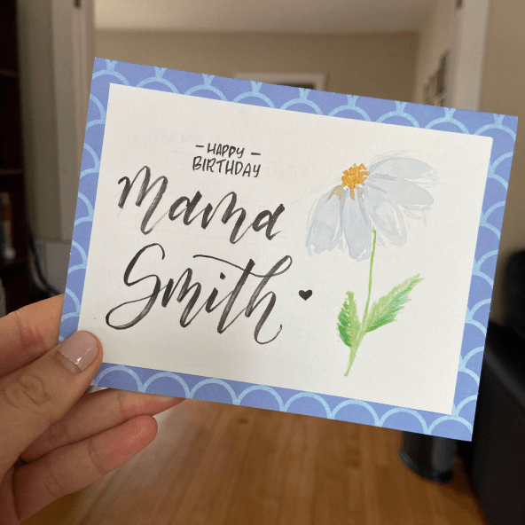
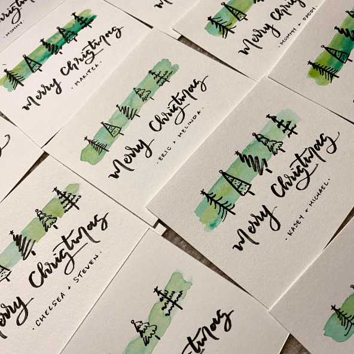
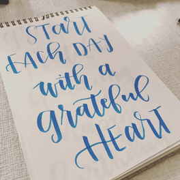
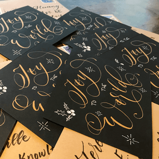
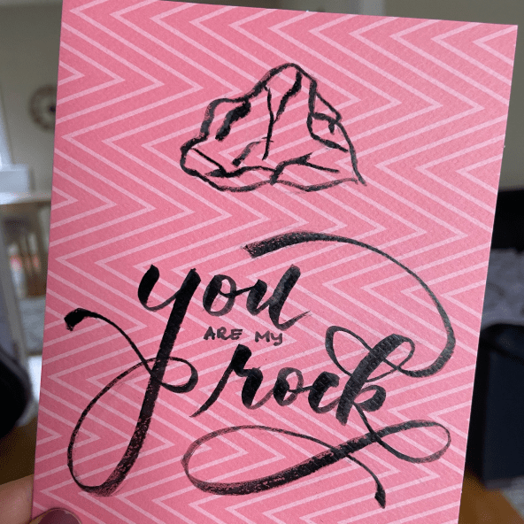
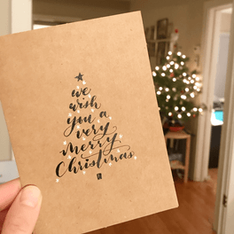
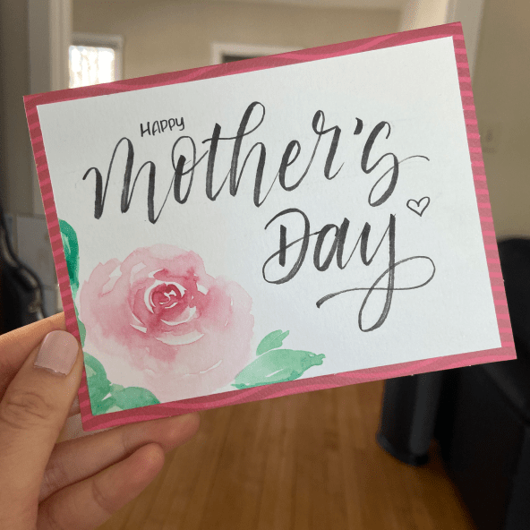
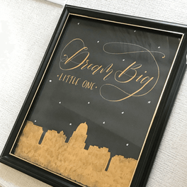
Singing & Songwriting
I've always loved to sing, and occasionally I dip my toes into songwriting. There's something really cathartic about putting a feeling into words and melody, and I am in awe of singer/songwriters (like my beloved Sara Bareilles) who seem to so perfectly capture not just an emotion but an entire mood in a few short, beautiful minutes.
Here's one of my latest songs.